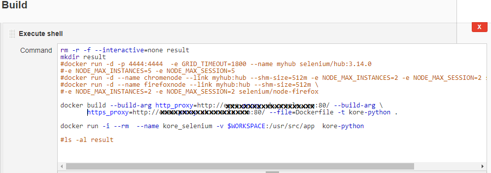
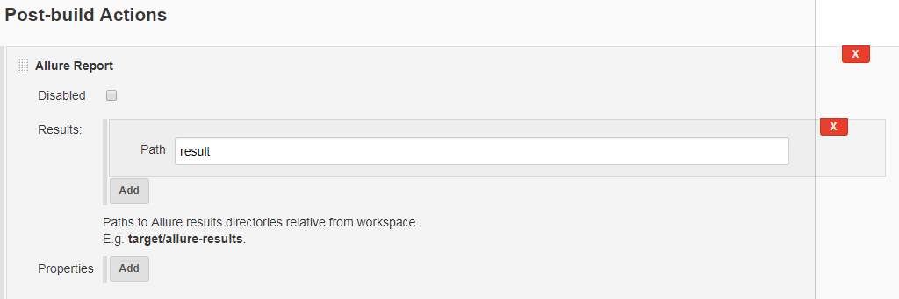
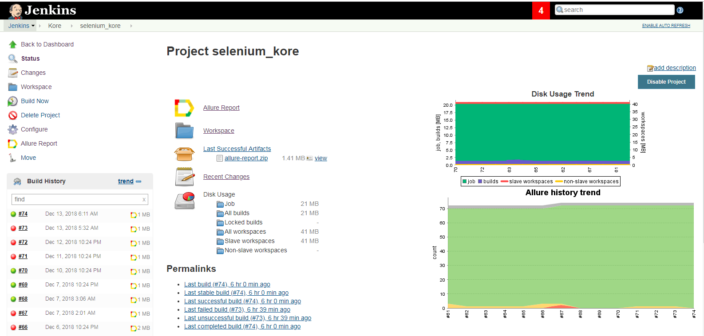
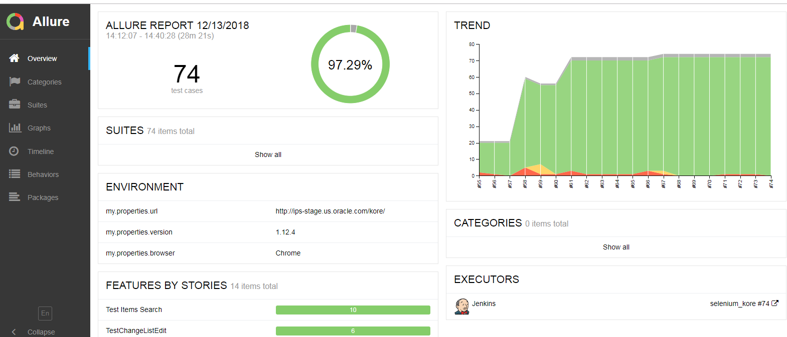

在Docker环境下运行Selenium自动化测试
之前的一篇文章记录了我怎么开发selenium的测试脚本，这一篇我想记录我如何在docker的环境里运行selenium 测试。
主要框架
- 环境： Docker
- 语言： Python 3.7
- 测试框架：Pytest (插件：allure-pytest-2.5.4 , pytest-xdist , pytest-ordering)
- 测试报告：Allure
- 集成工具：Jenkins
运行Selenium Docker image
在我们工作中，我们所有的部署和测试环境都集中在Jenkins里面，中有一台slave已经装好了docker，所以这里就不累述安装docker的过程。
首先运行selenium docker的官方镜像docker image。我选用的是Selenium Grid Hub and Node的镜像。
Hub
1 | docker run -d -p 4444:4444 -e GRID_TIMEOUT=1800 --name myhub selenium/hub:3.14.0 -e NODE_MAX_INSTANCES=2 -e NODE_MAX_SESSION=2 |
1.hub镜像: selenium/hub:3.14.0
2.-d : Running Containers as Daemons and it means you can run a Docker container in the background as a service.（这句话就是说可以在后台以服务的形式运行容器，在这里附上一张Docker Daemon的示意图）
3.-p : publish the 4444 port from the container to the host.也就是你可以通过host的4444端口来和container通信，格式是(host_port:container_port)
3.GRID_TIMEOUT=1800: The timeout in seconds before the hub automatically releases a node that hasn’t received any requests for more than the specified number of seconds. wiki page 这个设置可以让hub在30分钟后释放一个node，如果这个node在30分钟内都没有向hub发送请求。
4.–name: 给hub起一个名字，这里的hub名字是myhub
5.NODE_MAX_INSTANCES, NODE_MAX_SESSION: The maximum number of browsers that can run in parallel on the node. This is different from the maxInstance of supported browsers.如果, NODE_MAX_INSTANCE=5，那么NODE_MAX_SESSION至少也是5
Node
1 | docker run -d -p 5900:5900 --name chromenode --link myhub:hub --shm-size=512m selenium/node-chrome-debug:3.14.0 |
1.node镜像: selenium/node-chrome-debug:3.14.0,这是一个debug模式的node，对于初学者来说非常有用，因为这个镜像有一个VNC server，我们可以通过端口5900来看到浏览器的整个操作过程。
2.-p: 这里是指定VNC的映射端口为5900.
3.–link：This option can be used for a single host scenario (hub and nodes running in a single machine). 在这里就是把node（chromenode）连接到hub(myhub)上。但是这种方式并不被官方推荐，可以Using docker networking。1
2
3
4$ docker network create grid
$ docker run -d -p 4444:4444 --net grid --name selenium-hub selenium/hub:3.141.59-dubnium
$ docker run -d --net grid -e HUB_HOST=selenium-hub -v /dev/shm:/dev/shm selenium/node-chrome:3.141.59-dubnium
$ docker run -d --net grid -e HUB_HOST=selenium-hub -v /dev/shm:/dev/shm selenium/node-firefox:3.141.59-dubnium
4.–shm-size: to use the host’s shared memory. 这里container用了host 512M的内存。
查看hub和node
- 如果你在docker的机器上，你可以在浏览器打开http://localhost:4444/grid/console,来查看。
- 如果你在其它host上，你需要ping docker host的IP地址，然后在浏览器打开http://ip:4444/grid/console

通过以下命令可以看到container的运行情况1
docker ps -a
Python 测试脚本
通过以下方式就可以启动docker selenium的webdriver:1
2
3
4
5
6
7def get_driver():
options = webdriver.ChromeOptions()
desired_cap = options.to_capabilities()
desired_cap['browserName'] = 'chrome'
desired_cap['platform'] = 'LINUX'
driver = webdriver.Remote(command_executor="http://localhost:4444/wd/hub",desired_capabilities=desired_cap)
return driver
一些小tips：
- 有时候driver.maximize_window()会报错，有的时候可以在启动driver的时候添加options.add_argument(“–start-maximized”)来解决问题
- 有时候options.add_argument(“–start-maximized”)也不好使，那么可以尝试options.add_argument(“–window-size=1920,1080”)
- 如果是用的Chrome的webdriver,可以使用headless mode：options.add_argument(“–headless”)
Python Docker image
创建python image：1
2docker build --build-arg http_proxy=http://xxx:80/ --build-arg https_proxy=http://xxx:80/ \
--file=Dockerfile -t kore-python
Dockerfile：1
2
3
4
5
6
7FROM python:3
WORKDIR /usr/src/app
COPY requirements.txt ./
RUN pip install --no-cache-dir -r requirements.txt
COPY . .
COPY ./environment ./result
CMD [ "pytest","testcase/","--alluredir=result","-n","2","--dist=loadfile","--tx","2*popen//python=python3.7"]
requirements.txt file:1
2
3
4
5
6pytest==3.5.1
pytest-ordering==0.5
selenium==3.11.0
allure-pytest==2.3.2b1
allure-python-commons==2.3.2b1
pytest-xdist==1.23.2
Run python image:1
docker run -i --rm --name kore_selenium -v $WORKSPACE:/usr/src/app kore-python
Jenkins配置
Build shell 命令如图：

Report 配置：

Jenkins 界面图

Allure Report

tips: 在Jenkins上allure report运行的时候，results的Path的文件夹创建者必须是Jenkins，所以不能在docker内部产生这个文件，不然会报permission deny的错。解决这个问题的方法就是result文件夹在‘Build Shell’命令行里创建。见上‘Build Shell’的图。
Docker的一些常用命令
- docker stop XXXX(container id or container name): 让正在运行的container停下来。
- docker rm XXX(container id or container name): 删除 container
- docker rmi XXX (image id or image name):删除 docker image
- docker ps -a :查阅container的状态
References:
[1] https://www.blazemeter.com/blog/how-to-run-selenium-tests-in-docker
[2] https://github.com/SeleniumHQ/docker-selenium
[3] https://www.manning.com/books/docker-in-practice
[4] https://docs.qameta.io/allure/#_jenkins